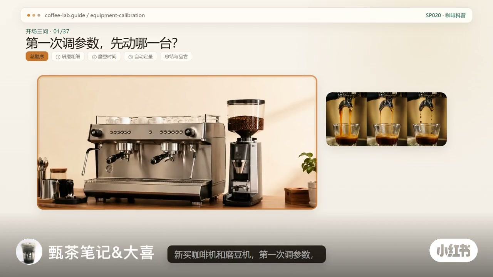
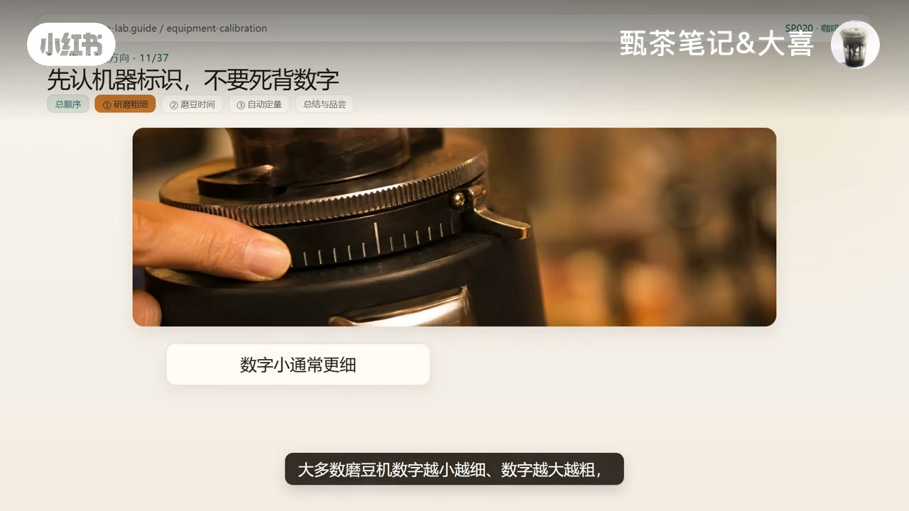
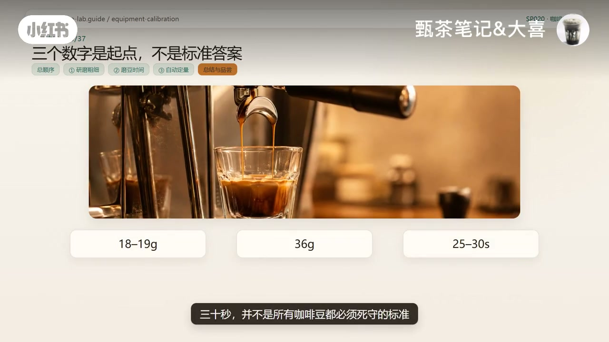

内容要点
这是一则约四分半的设备调试教程：从「疯狂往外冲」「时间从哪开始算」等新手痛点切入，落到「先调流速 → 再定粉量 → 最后做自动化」。
知识结构
先调哪一台、疯狂外冲怪谁、时间从按键还是第一滴算——作者给出顺序：研磨粗细 → 磨豆时间 → 自动定量。
充分预热、温度先放在91–93℃，压力预浸自动量先别改；调试阶段每杯称粉也称液；粉接近细盐只作起点。
按键同时计时，到36克马上停；<25秒调细，>30秒调粗；落在25–30秒即进入合适起始范围。
先认机身标识；每次调完排约10克残粉；大幅调细要分段；本阶段只改研磨度直至稳定。
固定研磨后用磨时控制出粉；落在18–19克并连续三次稳定再保存；换豆或调磨后仍要复称。
计时定量记秒数、流量计记水量；设完用秤复测，连续2–3杯接近36克才算调好。
18–19克 / 36克 / 25–30秒不是死答案；先把机器调稳，再用味道判断，好喝才是结果。
新设备调试真正要记住的不是某台磨豆机调到数字几，而是三步：先调流速，再定粉量，最后做自动化。
图文实录
第一次调参，先动哪一台
视频一上来就抛出新手最慌的三件事：新买咖啡机和磨豆机，第一次调参数到底先调哪一个；18克粉一开机就疯狂往外冲，到底是粉量不对还是研磨太粗；萃取时间从按键开始算，还是第一滴出来以后才算。
作者没有立刻甩一串机型数字，而是先钉死顺序：

先让机器稳定，再谈参数
正式动手前，作者要求充分预热，温度先保持在91–93度；压力、预浸和自动萃取量暂时都不要改——调试阶段一次只动一个关键变量。准备同一款豆、双份粉碗、电子秤、浓缩杯和计时器；调试时每杯既要称粉，也要称最后的浓缩液。
磨豆机可从默认研磨度开局，粉看起来接近细盐可以当视觉起点，但最终是否合适「不靠眼睛判断，要看液重和时间」。粉量目标落在18–19克，不要低于18克，且每轮尽量一致；装粉后新手建议先铺平，再水平压粉，手柄上机后电子秤和浓缩杯摆好。
按键计时到36克：用流速定研磨
口播在约52秒后有一小段空白，画面转入按键与萃取演示。规则很硬：不是等咖啡流出来再算；电子秤到36克马上停止萃取并记录时间。
判断也很简单：不到25秒已经到36克，流速太快，研磨调细；超过30秒还没到36克，流速太慢，研磨调粗。若18–19克粉萃出36克液能落在25–30秒，研磨度就进入比较合适的起始范围。回扣开场：粉量和其他操作没变时，疯狂往外冲首先检查研磨是不是太粗。
认标识、排残粉，只改研磨度
多数磨豆机数字越小越细、越大越粗，但不同型号可能相反——调整前先看机器上的粗细标识。更关键的动作是：每次调整研磨度以后，先排掉大约10克咖啡粉，因为通道里还残留上一档位的粉；不排掉，下一杯会混入两种粗细，测试就不准。
需要大幅调细时，也不要一次拧到底：调一点、抹一点、再继续调，避免豆子卡住刀盘、让调节机构受力过大。排完残粉后重新称18–19克，布粉压粉归零，按键同时计时到36克停止。这个阶段每一轮只改研磨度，其他条件尽量不变，重复直到36克能比较稳定地落在25–30秒——做到这里，研磨粗细先固定，不要再动。

固定研磨后，用磨豆时间稳住粉量
第二步开始调磨豆时间。许多定量磨豆机其实是通过「磨几秒」控制出粉量。作者建议先把磨豆时间设成3秒，磨完称重：低于18克就增加时间，超过19克就减少时间，直到每次出粉都在18–19克之间。
然后连续测试三次，三次都比较稳定就可以保存这个磨豆时间——以后正常出杯就不用每杯重新称粉。但开机第一杯、换豆、调整过研磨度，或发现萃取速度明显变化时，还是要重新复称。
最后才设咖啡机自动定量
研磨度和粉量都稳定以后，才进入最后一步：设置咖啡机自动萃取量。作者对比两种常见方式。
第一种是计时定量：机器只记住运行多少秒，并不知道杯子里实际有多少克咖啡液。所以根据前面稳定萃取到36克所需要的时间设置自动萃取时长，设完再放上电子秤复测，确认实际液重接近36克。
第二种是流量计定量：机器根据流过系统的水量控制，一般会比单纯计时定量更稳定一些。常见做法是长按自定义萃取键开始萃取，电子秤到36克时松开，让机器记住这次萃取量；但不同咖啡机设置方式可能不同，有些需要再次按键停止和保存，具体以说明书为准。
自动定量设置完成以后，再连续制作2到3杯，每杯都能比较稳定地接近36克，这个自动萃取键才算真正调好。
三步复盘：数字是起点，好喝才是结果
作者把整条顺序再走一遍：第一步用18–19克粉、目标36克液、25–30秒参考区间把研磨粗细调稳定；第二步研磨度不再改变，通过磨豆时间让自动出粉稳在18–19克；第三步最后设置咖啡机自动萃取到接近36克。
最后提醒：18–19克粉、36克液重、25–30秒并不是所有咖啡豆都必须死守的标准答案，更像是新手第一次调设备时一个比较稳定的起点。先按照这套参数把机器调稳定，再开始用味道判断；换了咖啡豆、烘焙度或饮用方式以后，合适的粉液比和时间都可能变化。进阶调试不是把数字卡得越来越死，而是根据酸甜苦涩、浓度和风味继续调整——参数只是起点，好喝才是结果。
